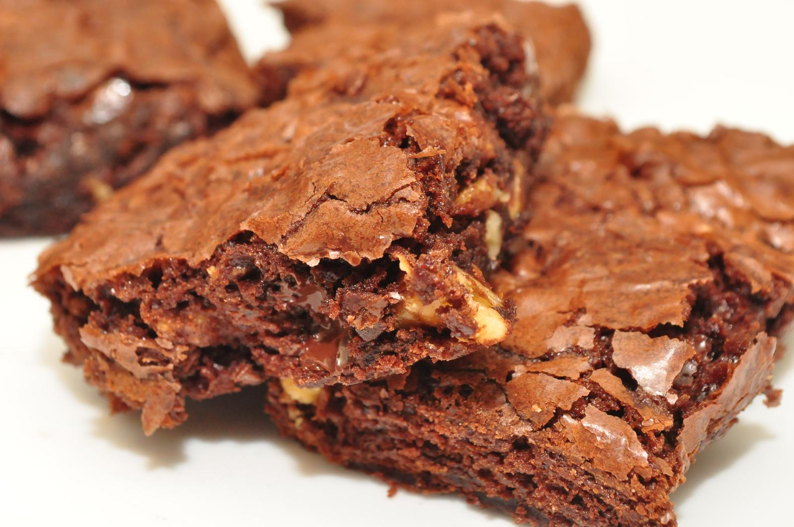

Brownie

This brownie recipe makes rich, fudgy brownies that always turn out well.
They're topped with homemade chocolate frosting to make the best brownies ever!
How to make brownies
Here's a very brief overview of what you can expect when you make homemade lasagna:
- Make the brownies: Melt the butter on the stove, then remove from heat and add the remaining wet ingredients.
Beat in the dry ingredients. Spread the batter in the pan and bake.
- Frost the brownies: Stir the frosting ingredients together until well-combined, then frost the brownies while they are still warm.
Cut into squares when cool.
Ingredients
½ cup butter
1 cup white sugar
2 eggs
1 teaspoon vanilla extract
⅓ cup unsweetened cocoa powder
½ cup all-purpose flour
¼ teaspoon salt
¼ teaspoon baking powder
Directions
- Preheat the oven to 350 degrees F (175 degrees C). Grease and flour an 8-inch square pan.
- Melt 1/2 cup butter in a large saucepan. Remove from heat, and stir in sugar, eggs, and 1 teaspoon vanilla. Beat in 1/3 cup cocoa,
flour, salt, and baking powder. Spread batter into prepared pan.
- Bake in the preheated oven until top is dry and edges have started to pull away from the sides of the pan, about 25 to 30 minutes.
Let cool briefly before frosting.
- To make the frosting: Combine softened butter, confectioners' sugar, 3 tablespoons cocoa, honey, and 1 teaspoon vanilla extract in a bowl.
Stir until smooth. Frost brownies while they are still warm.